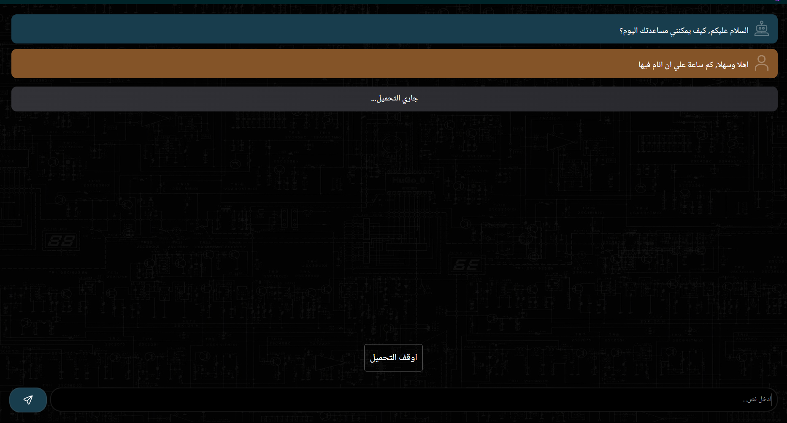

Web Development
YouShield
A chrome extension to end binge watching. 361 weekly active users as of Nov 9th 2024. 12 reviews, all 5 stars. Check it out.
YouShield
A chrome extension to end binge watching. 361 weekly active users as of Nov 9th 2024. 12 reviews, all 5 stars. Check it out.

KalemGPT
A chatbot website that uses ChatGPT 3.5 in the backend. I wanted to learn how to use the OpenAI api. Bought a domain for it for a year and multiple people used it from different contires. Stopped it because the api free trial ended.
KalemGPT
A chatbot website that uses ChatGPT 3.5 in the backend. I wanted to learn how to use the OpenAI api. Bought a domain for it for a year and multiple people used it from different contires. Stopped it because the api free trial ended.
BizWebless
A SaaS tool to help web designers find local clients. Uses google maps in the backend.
BizWebless
A SaaS tool to help web designers find local clients. Uses google maps in the backend.Desktop Application Development
20-20-20
Every 20 minutes look for 20 seconds at something 20 feet away.
20-20-20
Every 20 minutes look for 20 seconds at something 20 feet away.
2D Raycasting Experiment
I wanted to understand to understand sin and cos and atan and be one step closer to being able to understand physics engines.
2D Raycasting Experiment
I wanted to understand to understand sin and cos and atan and be one step closer to being able to understand physics engines.
AI Pong
I wanted to understand AI so I decided to make AI learn to play pong using a python library called neat
Aimbot
Learning how to process what's on the screen to move the mouse and click targets. As quickly as possible.
Aimbot
Learning how to process what's on the screen to move the mouse and click targets. As quickly as possible.
A Whatsapp Bot
A whatsapp bot that takes a list of messages and sends them to a selected person, I learned how to parse html to be able to select certain elements and use them

Bezier Curves
A Program to experiment with bezier curves, understand how they work and learn more maths to be able to understand technical things better

Chess
Chess!

Cloth Simulation
A cloth simulation to better understand and maneuver physics engines, You start and stop the simulation, you can add points and lines and remove lines

Controlled Sacrifice
A 2D platformer made in a game jam, with 8 levels, whenever you lose a life you need to choose a debuff, half gun damage, lose equipped gun, things like this, when all of the 9 debuffs are used you lose

Multiplayer rps
Rock Paper Scissors but multiplayer, this teached me a lot about networking, but it's multiplayer for players on the same network

My Own IDE
This is an unfinished attempt at making my own IDE

A*
The A* pathfinding algorithm to understand pathfinding and improve my technical thinking

Server Test
An experiment to try to make my laptop run my server and make anyone be able to connect to it

Sorting Algorithms
4 sorting algorithms to understand how to optimize things and improve my technical thinking